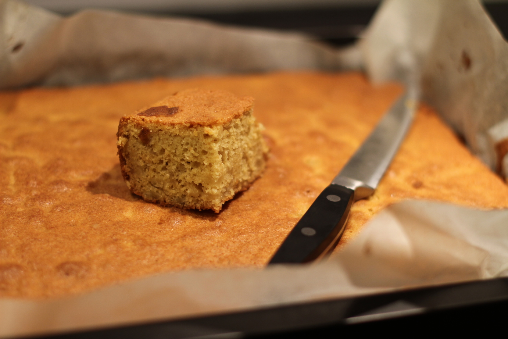

Gluten-free Pear Cake
This cake is moist and full of air, just like a normal cake, thanks to the eggs.
metadata
Created on 2018-10-08 Last updated on 2020-05-16
Estimated time needed: At least 1 hours 10 minutes. At most 1 hours 17 minutes.
Ingredients
| 750 | g | pears | ||
| 300 | g | sugar | ||
| 250 | g | butter | ||
| 220 | g | oat flour | You can add oats to a food processor to make your own oat flour. | |
| 220 | g | gluten-free flour | Almond flour gives the best taste, but any gluten-free flour will work. | |
| 15 | g | baking powder | ||
| 8 | eggs | |||
| 5 | g | baking soda | ||
| 2 | tbsp | vanilla extract | ||
| other spices | You can use anything that goes well with the pears. Some examples are brown sugar, cinnamon, cardamon or ginger. |
Scaling
Timeline
Directions
⌛ Active time 10 minutes
- 750 g pears
Dice the pears:
Peel the pears and chop them into small cubes.
⌛ Active time 10 minutes
- 2 tbsp vanilla extract
- other spices | You can use anything that goes well with the pears. Some examples are brown sugar, cinnamon, cardamon or ginger.
Warm the pears:
Put the pears into a frying pan, adding vanilla extract and the optional other spices. Warm on medium-low heat until the pears are soft, but not falling apart yet. Set aside to cool
⌛ Active time 1 minutes
- 250 g butter
Soften butter:
Soften the butter in a microwave oven or a small saucepan.
⌛ Active time 3 minutes
- 8 eggs
- 150 g sugar
Split eggs:
Split the eggs. Egg whites should go into a kitchen machine bowl, and the yolks in another bowl. Add half of the sugar to the yolks.
⌛ Active time 2 minutes
- 150 g sugar
Beat egg white and sugar:
Add the rest of the sugar to the egg whites. Beat the egg whites and sugar stiff.
⌛ Active time 3 minutes
- 220 g gluten-free flour | Almond flour gives the best taste, but any gluten-free flour will work.
- 220 g oat flour | You can add oats to a food processor to make your own oat flour.
- 15 g baking powder
- 5 g baking soda
Mix everything else:
Add the dry ingredients to the egg yolks. Also add the water from the pears. Mix together. You can add ab bit more water if it is hard to mix. When the batter is smooth, add the pears.
⌛ Active time 1 minutes
Preheat the oven:
Preheat the oven to 160 ℃.
⌛ Active time 2 minutes
Fold in pears:
Carefully fold the two mixture's together. Try to stop mixing as soon as the batter is an even color. Pour the batter into a deep baking tray.
⌛ Passive time 45 minutes
Bake:
Bake the cake for about 45 minutes, until golden-brown on top and a cake skewer comes out clean.